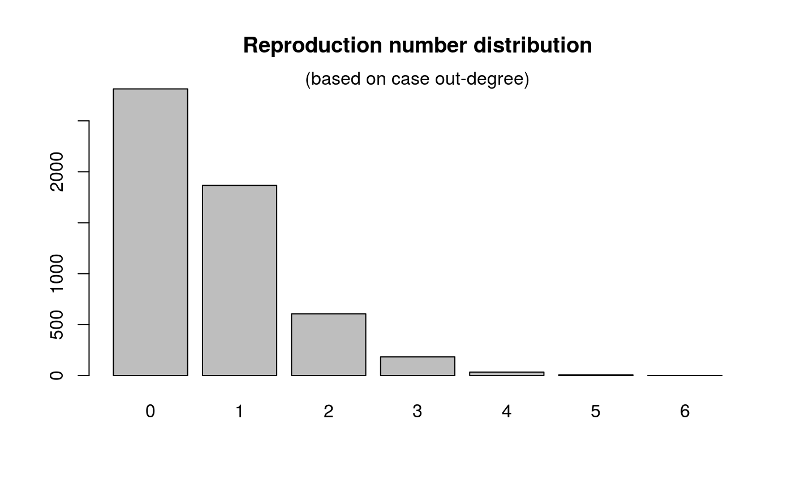

get_degree.RdThis function computes the number of contacts per cases in a
epicontacts dataset. Whenever contacts are directed, the
argument 'type' can be used to specify which kind of contact should be
considered: 'in' (towards the case), 'out' (from the case), or 'both'.
get_degree(x, type = c("in", "out", "both"), only_linelist = FALSE)
| x | an |
|---|---|
| type | the type of degree to be computed (see description); if contacts are not directed, this will be forced to 'both' |
| only_linelist | a logical indicating if cases whose degree is computed should be from the linelist exclusively |
## make epicontacts object if (require(outbreaks)) { x <- make_epicontacts(ebola_sim$linelist, ebola_sim$contacts, id="case_id", to="case_id", from="infector", directed=TRUE) x ## compute in-degree deg_in <- get_degree(x) table(deg_in) ## compute out-degree deg_out <- get_degree(x, "out") barplot(table(deg_out), main = "Reproduction number distribution") mtext(side = 3, "(based on case out-degree)") }